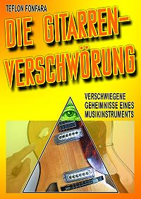
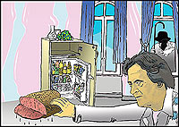
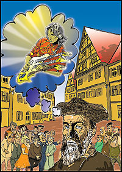
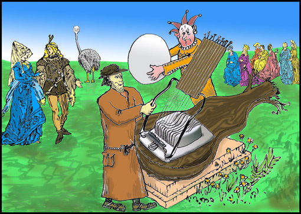
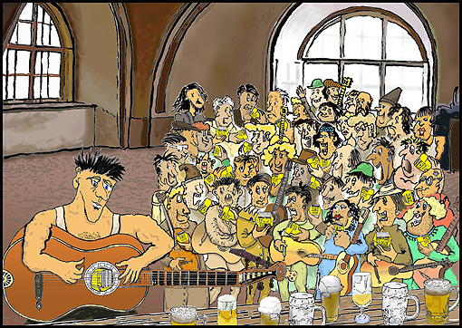

Abenteuer, Fußball und die andere Realität. Von Teflon Fonfara
Eine tiefe Liebe verbindet Martina und ihr neuer Freund. Martina entdeckt, dass er über besondere Fähigkeiten verfügt und das komplette Leben der beiden verändert. Sie wird seine Managerin und organisiert eine ungeahnte Karriere für den Mann mit dem außergewöhnlichen Talent. Mit metaphysischen Aktionen rettet er Menschenleben, holt sich den Hauptgewinn in einer TV-Sendung und möchte den Zwergstaat Andorra zum Fußballweltmeister machen.
Doch er hat auch Feinde, Wissenschaftler meinen, er verstößt gegen die Naturgesetze der Physik. Er wird bedroht und Freundin Martina wird entführt. Eine Loge tritt in sein Leben und möchte ihm helfen. Ein alter Plan führt nach Ibiza. Es ist die Ankunft der „Heiligen Kinder“.
SDR-Kult-Comedy · Erhältlich als Hörspiel und als Buch
Der neue Bahnhof isch fertig
Frau Kächele & Frau Peters
Die Kultweiber Frau Kächele & Frau Peters aus dem Wilden Süden besichtigen den neuen Stuttgarter Bahnhof und erleben dort unfassbare Abenteuer. Endlich kommt hier eine Jahrhundert-Story über die wirklich skurrilen Geschichten von Stuttgart 21.
Frau Kächele & Frau Peters, die Hefezopf liebenden Kultfiguren, erleben unfassbare Abenteuer im neuen Stuttgarter Bahnhof. Gleich zu Anfang müssen sie ein »Hopftraining« absolvieren, um auf den schräg angelegten Bahnsteigen den ständig vorbeirollenden Koffern und Kinderwägen aus dem Weg springen zu können.
Statt Zug zu fahren – laufend fallen welche aus oder kommen zu spät –, besichtigen sie den zum Eventtempel mutierten Bahnhof. Wegen eines Wassereinbruchs fahren sie schließlich statt mit der Bahn im Tretboot durch die Tunnel nach Ulm. Doch dann biegen sie falsch ab, stürzen einen Wasserfall hinab und landen in der Neckarschleuse neben einem Kreuzfahrtschiff. Als sie erfahren, dass im ICE Waschmaschinen stehen, in denen Schwarzgeld gewaschen wird, machen sich die Damen mit detektivischem Gespür daran, die dunklen Machenschaften aufzudecken …
Ein surreales Vergnügen voller aberwitziger Einfälle. Von Teflon Fonfara. Weiter zu Frau Kächele & Frau Peters.
Frau Kächele & Frau Peters unterwegs. Dialogisch geschrieben in Mundart.
112 Seiten, 13 Illustrationen, € 12,99, Silberburg-Verlag, ISBN 978-3-8425-2273-2. Das kleine Geschenk für alle Momente.Bestellen
Das Video zum Buch
Der neue Bahnhof isch fertig
Ausverkauft
Smaragd-Verlag
Die Kraft der spirituellen Transformation
Humor, Harmonie, Heilung
Umfang
288 Seiten, A5, gebunden, mit Leseband
ISBN
978-3-941363-84-7
Eine Rabe fliegt am Fenster vorbei und verändert die Welt. Es beginnt eine Geschichte um das Zusammenspiel magischer Zufälle, beobachtet aus der fünften Etage mitten in der Stadt.
Der Künstler Tef Fonfara erzählt humorvoll, warum wir in der weltlichen Realität die wesentlichen Dinge nicht sehen können. Es wird deutlich, welche Kraft die Gedanken haben, und wie wir sie wirksam machen können. Eine Freundschaft zu einem Raben ist der Anfang einer Ereigniskette um Wahrnehmungen, die bisherige Denkmuster als ungültig erklären.
Der Autor beschreibt feinstoffliche Gesetze, die ihre geheimnisvolle Wirkung haben. Wir werden eingeführt in das Verständnis der unsichtbaren Energie. Fonfara verwendet spielerisch „positive Tricks“ für das erfolgreiche Geschäfts-Meeting, für ein umjubeltes Rock’n’Roll-Konzert, für die Heilbehandlung oder wenn er sich kommunizierend mit dem Wespenvolk auf dem Balkon anfreundet.
Er erklärt unterhaltsam esoterische Prinzipien und geht tief ins Detail: Jeder kann sich heilen. Jeder kann die Welt verändern. Und es geht um mehr, denn Humor, Harmonie und Heilung bedeuten dasselbe. Es wird gezeigt, wie die unsichtbaren Wirkungen zusammenhängen.
Fonfara durchleuchtet die Fähigkeit des Menschen und lässt den Leser ahnen, dass er nun eine andere Welt betreten hat. Wir werden erinnert, dass wir eigentlich nur unsere göttlichen Fähigkeiten vergessen haben und wer wir eigentlich sind.
Tef Fonfara bietet in witzigen Anekdoten aus seinem Künstlerleben Beispiele für praktische Anwendungen zur spannenden Sichtweise der abstrakten Welt von Engeln, Geistern und Seelenfreuden. Nichts verbleibt dogmatisch, es werden Denkmuster angeboten, die je nach Spaß oder Wichtigkeit benutzt werden können zur Verbesserung des Lebens.
Die Kraft der spirituellen Transformation ist ein informativer spiritueller Erlebnisbericht, dies ist auch ein Handbuch für außergewöhnliche Tipps, hilfreich, heilend und im Zeitgeist des veränderten Weltgefüges nach 2012. Ein Buch für die Neuzeit. – Smaragd Verlag –
40 Prominente sprechen in neu erschienenem Buch über religiöse Bildung
Umfang
264 Seiten
ISBN
978-3882074130
Trier/München – Wie kommen Menschen in der heutigen Zeit zu einer religiösen Entscheidung? Ist Religion überhaupt noch zukunftsfähig oder nur etwas für weltfremde Spinner? Diesen Fragen geht das Buch „RELI – aus gutem Grund. Warum religiöse Bildung wichtig ist“ nach.
40 prominente Persönlichkeiten aus Politik, Kirche, Kunst und Kultur lässt der Autor, Professor Dr. Joachim Theis von der Theologischen Fakultät Trier, darin zu Wort kommen.
Der Beitrag „Gott sind wir selbst“ von Tef Fonfara kann hier gelesen werden: PDF

Ausverkauft
Satire
Die Gitarren-Verschwörung
Verschwiegene Geheimnisse eines Musikinstruments
Umfang
144 Seiten, 8 Illustrationen (Color)
ISBN
978-3-8482-2755-6
Du glaubst, du wüsstest alles über Gitarren?
Die Gitarren-Verschwörung ist ein Aufklärungswerk über die Gitarren-Geschichte bis hin zur „Global Guitar Elite“, einer Bruderschaft der Illuminati. Geheime Logen entscheiden über deinen Musiker-Ruhm oder Untergang.
Viele Tipps für Einsteiger: Wie werde ich extrem berühmt? Wie komponiere ich einen Gitarren-Welthit? Wie verkaufe ich im eigenen Stadtteil meine ersten 500.000 CDs? Wie ernährt sich der Gitarrist?
In spannender Unterhaltung erfahren wir aufschlussreiche Details in Farbe illustriert: Der erste Tonabnehmer war ein Remington-Rasierer! Die Nostradamus-Prophezeiungen über Gitarristen!
Wegen der Funde von 1948 in den Höhlen von Qumran war dieses Buch erst möglich. Zwischen den Jesus-Schriftrollen wurde auch die „Structura Templer Gitarra“ entdeckt, die der Autor auf Umwegen erwarb und ein höchst unterhaltsames Buch daraus machte.
Dies ist ein Werk der großen Aufklärung und wird die Gitarristen- und Musikwelt verändern: Sie wird noch öfters schmunzeln. Eine beißende Satire als Handbuch zum berühmt werden.

John McLaughlin fand in der Minibar ein Stück Pökelfleisch. Damit rettete er die Honigpumpe von Joseph Beuys.

Nostradamus konnte schon Gitarren mit 3 Hälsen in der Zukunft sehen.

Die erste Gitarre war eigentlich ein Eierschneider für Straußeneier.

Alle Musiker erhielten ihren ersten Remington-Rasierer. Der Rasierer verklemmte sich im Schallloch der Gitarre. Der Tonabnehmer war erfunden.
Die Gitarren-Verschwörung
Trailer zum Buch
Ausverkauft
Pulitzer-Preis
BoD Norderstedt
Lyrik, Witz & Wahrheit
Meine täglichen Facebook-Sprüche
Umfang
112 Seiten
ISBN
978-3-8482-3247-5
Das kleine Geschenk- und Mitbring-Büchlein ist skurril, schräg und voller Weisheiten. Zum Lachen und Nachdenken.
Dies ist eine Sammlung galanter Rhetorik-Spielereien. Alles schön sortiert in „Lyrik am Morgen“ / „Wetter-Lyrik“ / „Jahreszeit-Lyrik“ und „Stuttgart-21-Lyrik“. Dazu kommt eine Serie mit „Jehova“ (diesmal ohne Zeugen) und ein „Heimat-Roman“. Der Autor hat sich daraufhin selbst den Pulitzer-Preis verliehen. Sehr unterhaltsam – auch ein Buch für unterwegs und zwischendurch.
Romantisches Liebesgedicht am Freitag: Meine Hände – an deiner Lende – würden auch ohne maulen – den Busen kraulen.
Zitat der Jahrhunderte: „Herr Otto, so lange Sie Maiskolben hier einbauen, werden Ihre Motoren nie berühmt.“
Peter Maffay wurde in Zweibrücken aus der Stadt gejagt, weil er dem Publikum erklärte: Über sieben Brücken musst du gehn!
Eine Domina hat beim Deutschen Fußballbund angerufen, weil sie den Strafraum mieten wollte.
Meine Freundin bringt während des Orgasmus den Original Zalando-Schrei. Jetzt denken die Nachbarn: Die kriegt aber oft neue Schuhe!
Die vollbusige Kuh vom Allgäu: Weil der Euter schwer zu Boden hing, kaufte der Bauer seiner Kuh einen Büstenhalter, jetzt tropft nur noch H-Milch.
In der Klinik wird gejazzt, wenn die Fruchtblase platzt. In Facebook wird gegröhlt, wenn Teflon hier die Zeilen ölt.
Frau Kächele & Frau Peters – Das Original Textbuch
Inhalt
59 Kurzgeschichten, 18 zweifarbige Illustrationen, acht Song-Texte
Umfang
96 Seiten, Hardcover, Fadenheftung
ISBN
978-3-932855-01-6
Die Szenen von Frau Kächele & Frau Peters werden immer wieder gerne von Laiengruppen und Mini-Theatern bei Schulaufführungen, Uni-Festen oder „Hefezopf-Parties“ aufgeführt und nachgespielt. Deshalb gab es immer wieder Anfragen bezüglich der Original-Texte.
Kopierte Original-Texte jedoch konnten nicht zur Veröffentlichung weitergegeben werden, weil sie alle nur handschriftlich existieren und nur der Autor Teflon Fonfara selbst kann den schwäbisch-skurrilen Text entziffern, den nur er selbst bei den Aufnahmen auch sprach.
Wegen dieser Nachfrage wurde nun das Textbuch mit entsprechendem Aufwand zusammengestellt und von Teflon Fonfara illustriert.
Videos werden erst beim Klick auf „Abspielen“ von YouTube (youtube-nocookie.com) geladen. Dabei werden Daten an YouTube übertragen – siehe Datenschutz.